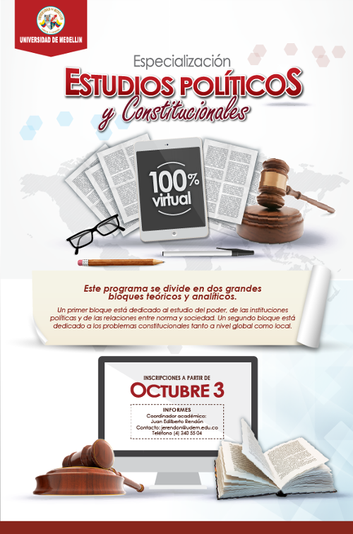
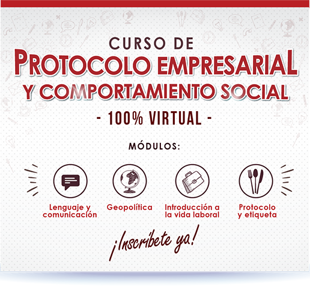
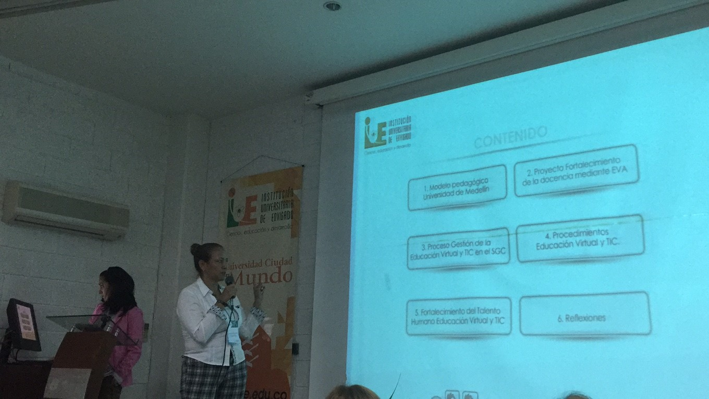
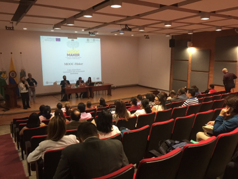

Lanzamiento Especialización en Estudios Políticos y Constitucionales Virtual

La Universidad de Medellín por medio de la Facultad de Ciencias Sociales y Humanas se complace en anunciarle a toda la comunidad que se ha abierto la Especialización en Estudios Políticos y Constitucionales en modalidad 100% virtual. Este programa se divide en dos grandes bloques teóricos y analíticos.
Un primer bloque está dedicado al estudio del poder, de las instituciones políticas y de las relaciones entre norma y sociedad. Un segundo bloque está dedicado a los problemas constitucionales tanto a nivel global como local.
El objetivo de este programa es formar especialistas con una sólida formación académica en temas decisivos para la construcción de la sociedad civil, la generación de opinión, la construcción cívica y participativa de canales de comunicación en pro de la construcción de una sociedad más plural, más horizontal, más deliberante, más crítica y más propositiva.
Noticias
Nuevos Posgrados Virtuales
La Universidad de Medellin con apoyo de Educación Virtual y TIC, ofrece los siguientes programas...
Diplomado en Notariado y Registro
Treinta y siete (37) funcionarios de la Superintendencia de Notariado y Registro...
Curso de Protocolo Empresarial y Comportamiento Social

Para cumplir la política institucional de implementar las Tecnologías de la Información y la Comunicación en los programas de pregrado y posgrado...
Curso de Tratamiento de Datos Personales
Como parte del proyecto para la Implementación de la Política de Tratamiento de datos en la Universidad de Medellín, se diseñó e implementó un plan...
Especializaciones Virtuales
2017-1
La Facultad de Derecho y la Facultad de Ciencias Sociales y Humanas con el apoyo de Educación Virtual y TIC de la Universidad de Medellín, ofrecen para el semestre 2017-1...
III Foro de Virtualidad: Las TIC: Una propuesta integral...

El grupo de trabajo de Educación Virtual y TIC de la Universidad de Medellín participó el pasado 28 de septiembre de 2016 en el III Foro de Virtualidad...
Educación Virtual y TIC apuesta por los MOOC

Actualmente los MOOC (Masive Online Open Courses) han evolucionado los métodos de enseñanza tradicionales, permitiendo a las personas conectarse a través de cualquier dispositivo...
Lanzamiento Especialización en Estudios Políticos...
La Universidad de Medellín por medio del Departamento de Ciencias Sociales y Humanas se complace en anunciarle a toda la comunidad...